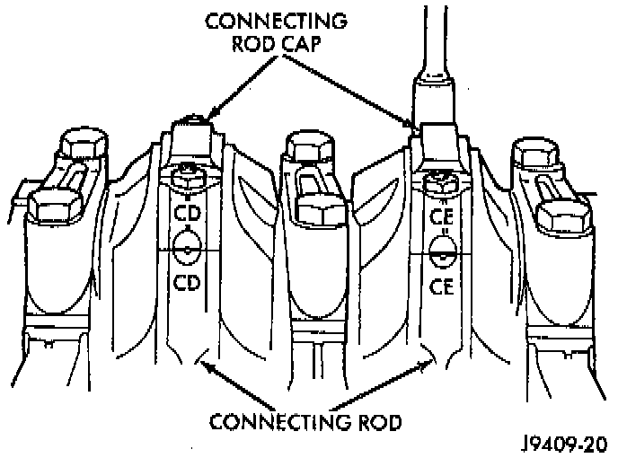
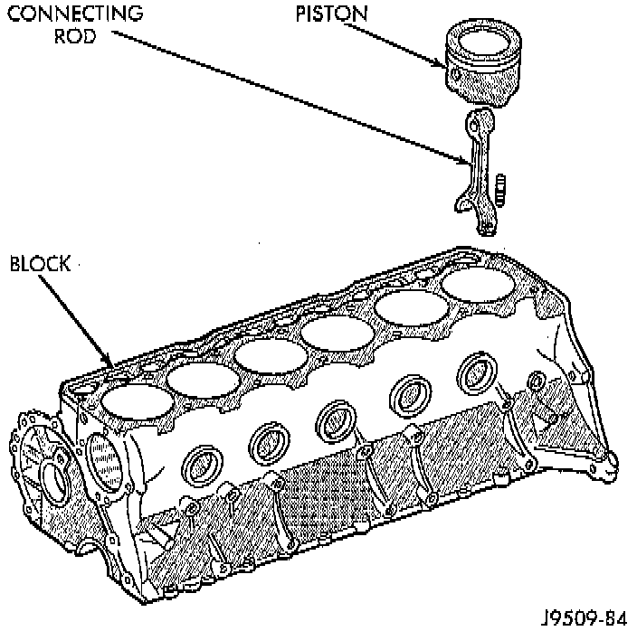

Removal
1. Remove the engine cylinder head cover.2. Remove the rocker arms, bridges and pivots.
3. Remove the push rods.
4. Remove the engine cylinder head.
5. Position the pistons one at a time near the bottom of the stroke. Use a ridge reamer to remove the ridge from the top end of the cylinder walls. Use a protective cloth to collect the cuttings.
6. Raise the vehicle.
7. Drain the engine oil.
8. Remove the oil pan and gasket.

9. Remove the connecting rod bearing caps and inserts. Mark the caps and rods with the cylinder bore location. The connecting rods and caps are stamped with a two letter combination.
10. Lower the vehicle until it is about 2 feet from the floor.
CAUTION: Ensure that the connecting rod bolts DO NOT scratch the crankshaft journals or cylinder walls. Short pieces of rubber hose, slipped over the rod bolts will provide protection during removal.

11. Have an assistant push the piston and connecting rod assemblies up and through the top of the cylinder bores.